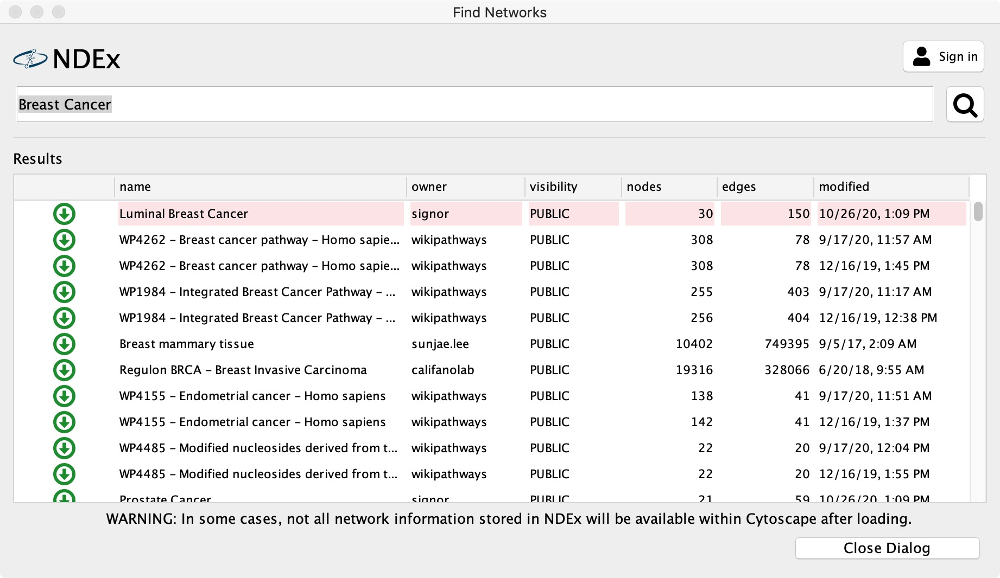
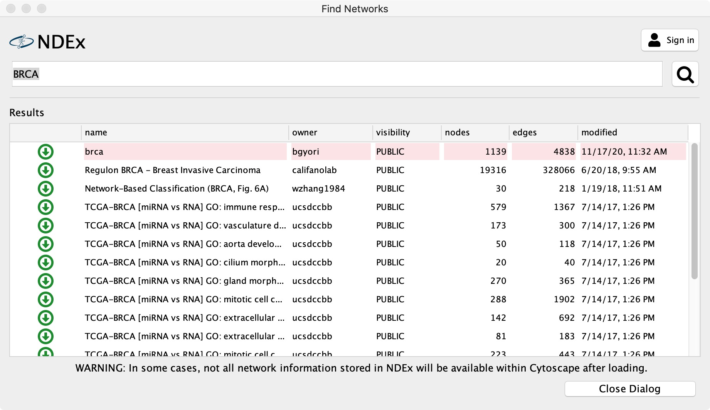
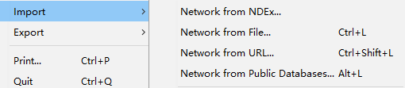
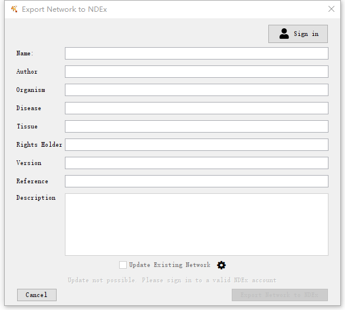
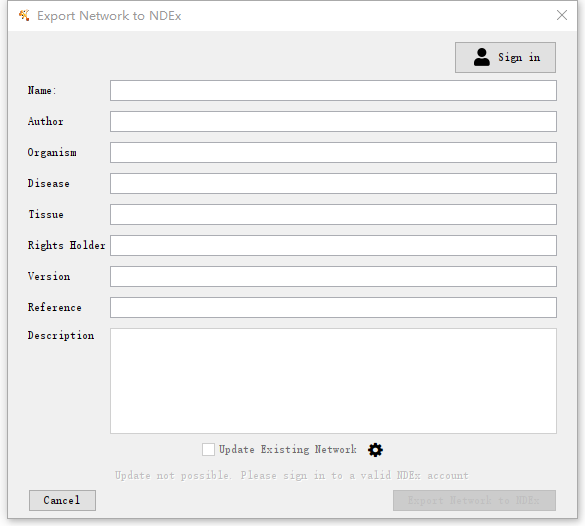

Cytoscape and NDEx
In this tutorial, you will:
- Finding networks form NDEx.
- Viewing networks.
- Sending networks to NDEx.

Setup
This protocol requires:
- An NDEx Account (instructions HERE)
- Cytoscape v3.8
- Latest cyNDEx-2 App (v3.0.1 or higher)
- Latest cyREST App (v3.9.1 or higher)
- Latest CX Support App (v2.3.0 or higher)
To update the required Apps:
- Launch Cytoscape 3.8
- Use the App Manager to update all Apps to the latest version available.
Finding networks
- Load the network via
File → Import → Network from NDEx.... - Type "Breast Cancer" in the search bar
- Click Enter to start the search.

Finding networks
- Load the network via
File → Import → Network from NDEx.... - Type "BRCA" in the search bar
- Click Enter to start the search.

Viewing networks
If we want to visualize and interact with this network, Cytoscape is our best choice. Both NDEx and Cytoscape work with the CX network data format.
Ok. We can work with this list. Let’s use the first hit. (name:brca)

Sending networks to NDEx
Now say you have a network in Cytoscape and you want to send it to NDEx for storage, sharing or exchange. First, you need to have an NDEx account. Go to http://www.ndexbio.org to create one if you haven’t already. You will need your username and password coming up soon.
- But first, let’s get a fresh network into Cytoscape. This could be any network, we’re just using the demo igraph network as an example.
- Import the network via
File → Import → Network from File.... - Select your igraph txt file or any other network files from your local

Sending networks to NDEx
- Right click the network and choose Export Network to NDEx...
- Sign in to the NDEx and enter your username and password
- Type network information and click "Export network to NDEx"
- Voila! Now anyone can search or browse to find your network and then use it in their research together with the full history and attribution of your contributions to the network.
 
